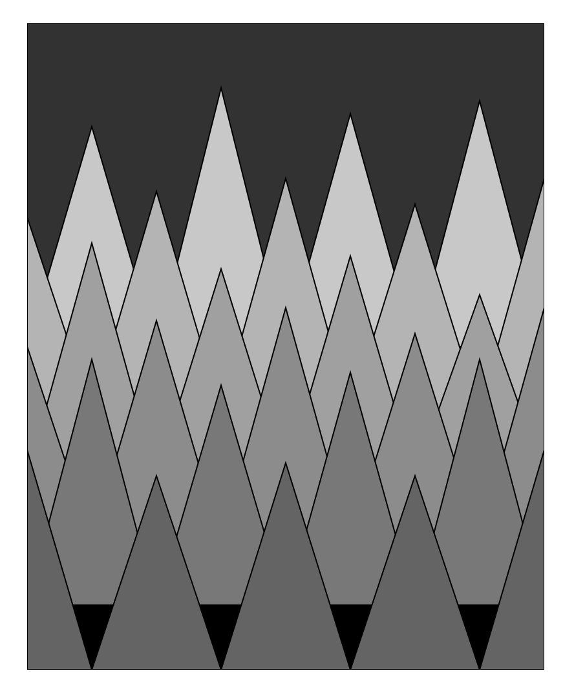

Diese Website dokumentiert drei meiner Arbeiten aus dem ersten Semester an der Hochschule für Bildende Künste Braunschweig. Ich will dem Leser hiermit einen kleinen Einblick in meine programmier Anfänge vermitteln.
Eine mit P5JS erstellte Grafik welche das Thema Perspektive hat. Es ist eine der ersten Grafiken die ich mit diesem Programm erstellt habe. Es ist eher simpel gehalten, jedoch konnte ich viel daraus mitnehmen und lernte viel über das Positionieren von Formen in einem Sketch. Dadurch dass es eben nur aus simplen, sich immer wiederholenden Formen besteht, konnte ich mich auf Position und Farbe konzentrieren. Die Dreiecke bilden auf diese Weise eine Wald Landschaft.

function setup() {
// setup runs once
const canvas = createCanvas(400, 500);
canvas.parent("sketch");
background(0);
//sky
fill(50);
rect(0,0,400,200);
//reihe1
fill(200);
triangle(200,250,300,250,250,70);
triangle(200,250,100,250,150,50);
triangle(100,250,0,250,50,80);
triangle(300,250,400,250,350,60);
//reihe 2
fill(180);
triangle(0,300,50,300,0,150);
triangle(50,300,150,300,100,130);
triangle(150,300,250,300,200,120);
triangle(250,300,350,300,300,140);
triangle(350,300,400,300,400,120);
//reihe 3
fill(160);
triangle(0,350,100,350,50,170);
triangle(100,350,200,350,150,190);
triangle(200,350,300,350,250,180);
triangle(300,350,400,350,350,210);
//reihe 4
fill(140);
triangle(0,400,50,400,0,250);
triangle(50,400,150,400,100,230);
triangle(150,400,250,400,200,220);
triangle(250,400,350,400,300,240);
triangle(350,400,400,400,400,220);
//reihe 5
fill(120);
triangle(0,450,100,450,50,260);
triangle(100,450,200,450,150,280);
triangle(200,450,300,450,250,270);
triangle(300,450,400,450,350,260);
//reihe 4
fill(100);
triangle(0,500,50,500,0,330);
triangle(50,500,150,500,100,350);
triangle(150,500,250,500,200,340);
triangle(250,500,350,500,300,350);
triangle(350,500,400,500,400,330);
}
function draw() {
// draw runs all the time
}
function keyPressed() {
if(key === "s") save("perspective-banannniii.png");
}
Der Code ist sehr simpel. Er erstellt eine Grafik, die verschiedene Reihen von Dreiecken darstellt, um eine abstrakte Landschaft zu bilden. In der setup()-Funktion wird die Größe des Zeichenbereichs festgelegt und der Hintergrund auf Schwarz gesetzt. Dann werden mehrere Reihen von Dreiecken in verschiedenen Grautönen gezeichnet, um eine Landschaft mit einer perspektivischen Darstellung zu erzeugen. Die keyPressed()-Funktion speichert die Grafik als Bild, wenn die Taste "s" gedrückt wird. Die Landschaft besteht aus fünf horizontalen Reihen von Dreiecken, die sich von oben nach unten erstrecken. Jede Reihe hat eine unterschiedliche Graustufe, die von oben nach unten abnimmt, dies vermittelt uns den Eindruck von Tiefe und Entfernung.
Dieses Video einer sich drehenden Blume ist eine Bildschirmaufnahme eines Projektes, welches ebenfalls in P5JS entstanden ist. Ich wollte austesten ob ich es schaffen kann, dass sich nicht nur die Blume an sich um einen Punkt dreht, sondern auch die Farben rotieren. Man sollte es nicht zu lange anschauen weil die Kopfschmerz Gefahr hoch ist. Am Ende war ich sehr zufrieden mit dem Endprodukt. Die Farben variieren ebenfalls jedesmal wenn man den ausführen Button drückt.
let numFlowers = 6;
let angles = [];
let colors = [];
let numFlowers = 6;
let angles = [];
let colors = [];
function setup() {
createCanvas(400, 400);
// Farben
for (let i = 0; i < numFlowers; i++) {
angles[i] = 0;
colors[i] = [];
for (let j = 0; j < 6; j++) {
colors[i][j] = color(random(255), random(255), random(255)); // random Farben
}
}
}
function draw() {
background(256);
translate(width / 2, height / 2);
for (let i = 0; i < numFlowers; i++) {
push();
rotate(angles[i]); //spinninnnn
drawFlower(colors[i]);
pop();
angles[i] += 1;
}
}
function drawFlower(petalColors) {
for (let i = 0; i < 6; i++) {
push(); // zwischenspeichern
rotate(TWO_PI / 6 * i); // dreht sich um den Mittelpunkt
drawPetal(petalColors[i]); // Blumenblatt zeichnen
pop();//ausführen
}
}
function drawPetal(petalColor) {
fill(petalColor);
beginShape();
curveVertex(20, 0);
curveVertex(20, 0);
curveVertex(100, -20);
curveVertex(100, 20);
curveVertex(20, 0);
endShape(CLOSE);
}
Der Code erstellt eine Animation von sich drehenden Blumen. Zu Beginn legt man die Variablen fest, dann die Anzahl der Blumen (numFlowers) sowie Arrays für die Rotationswinkel (angles) und die Farben der Blütenblätter (colors). In der setup()-Funktion wird der Canvas erstellt und Farben für die Blütenblätter generiert. In der draw()-Funktion wird der Hintergrund gelöscht, die Canvas in die Mitte verschoben und für jede Blume die Funktion zum Zeichnen der Blume aufgerufen. Die Blumen drehen sich um ihre eigene Achse, die Rotationswinkel erhöhen sich ständig. Die Funktion drawFlower() zeichnet eine Blume mit sechs Blütenblättern, für jedes Blütenblatt wird dann eine Farbe aus dem Array petalColors verwendet. Die Funktion drawPetal() zeichnet ein einzelnes Blütenblatt als geschlossene Form mit Bezierkurven. Insgesamt kann in der Animation jedes Blütenblatt eine random Farbe von 0-255 bekommen.
Das Sleeping uncle Project ist eine Zusammenarbeit unseres gesamten Kurses. Wir unterteilten uns in Teams; Frontend, Hardware Code, Physical Building, Documentation und Design. Mein Team war fürs Design zuständig. Ich entwarf eine Animation die der Gewinner am Ende zu sehen bekommt. Es ist ein in Procreate animiertes Sandwich. Am Anfang war es schwierig sich mit so vielen Menschen abzusprechen. Jeder hatte andere Ideen und Wünsche für unser Projekt. Ich finde wir haben jedoch am Ende alle super zusammengearbeitet und sind zufrieden mit dem Ergebnis.
Abschließend kann ich sagen dass ich viel aus dem Kurs mitnehmen konnte. Am Anfang war es für mich ein bisschen kompliziert die neuen Programme und Tool verstehen zu können, da ich bisher noch nicht viele Erfahrungen in diesem Bereich sammeln konnte. Mich selbst zu motivieren fiel mir oft sehr schwer. Etwas komplett neues von Grund auf zu lernen, erwies sich jedoch als tolle Erfahrung und machte mir gerade gegen Ende des Semesters viel Spaß. Ich freue mich sehr darauf, noch mehr lernen zu können und meinen Horizont zu erweitern.